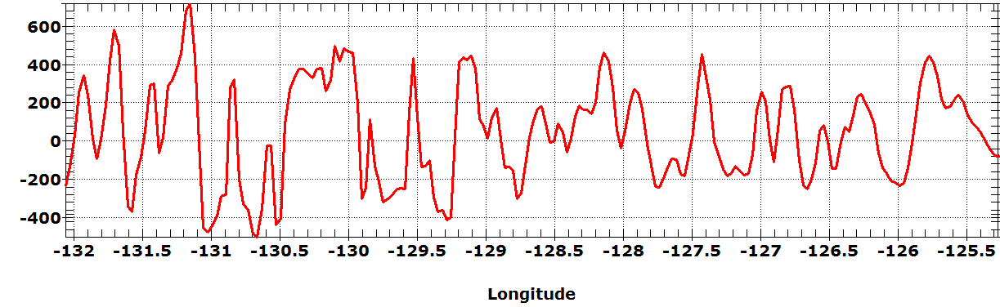
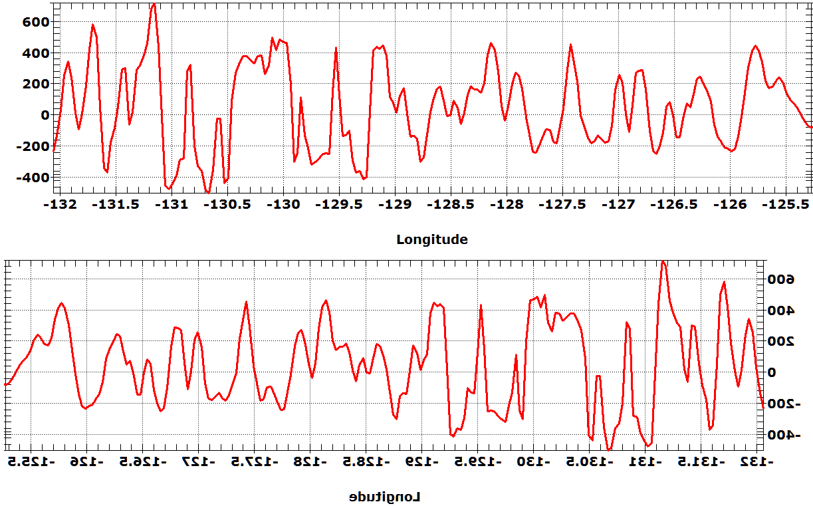
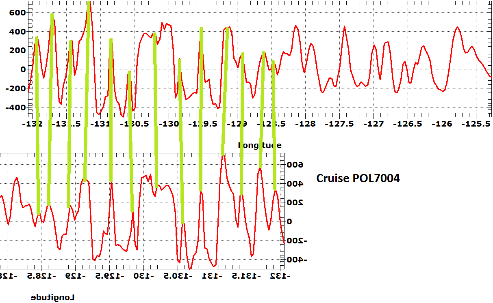

 |
Profile, cruise POL7004 on the Juan de Fuca ridge. The scale is by
longitude; the cruise sailed along a parallel from west to east.
The ridge may or may not be easy to pick out.
Enlarge image. |
 |
- Export the profile to Paint.
- Enlarge the overall canvas in Paint so you can put a second profile
below it. You may also want to add white space on
either side of the profile, so you can move the reversed
profile back and forth.
- To get the reversed profile:
- Reverse the x axis on the profile, on the right
click, modify graph form.
- Or
- Export a second version of the profile below the first.
- Perform a flip horizontal on one profile. This gives a mirror
image of the profile, and in geology legend, the
accidental creation of a mirrored profile by looking at
a clear overlay from the back led to recognition
of the symmetrical anomalies.
- Select the reversed profile, and move it to locate the best match.
Enlarge image.
|
 |
Best match, with matching anomalies marked.
- Ridge crest is at -130.25, and is Anomaly 1. It will often not
be perfectly symmetrical.
- Jaramillo event--half the magnitude for the ridge,
and very short.
- Anomaly 2
- Anaomaly 2A (2 peaks, one is missing here)
- Anomaly 3 (2 peaks marked, 2 more on east side only)
Enlarge image.
|
{kind=link}
{kind=link}
{kind=link}